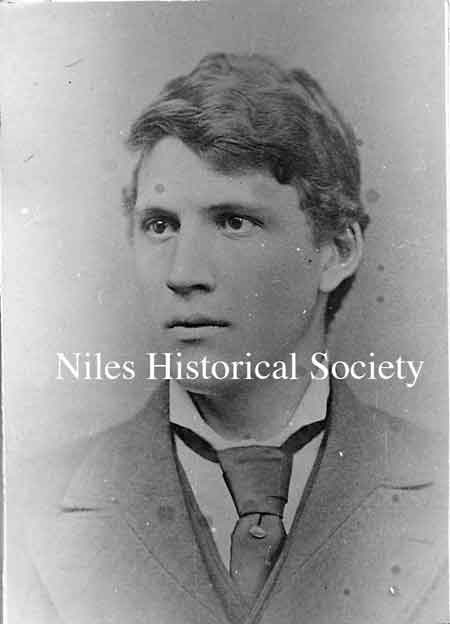
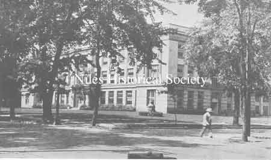
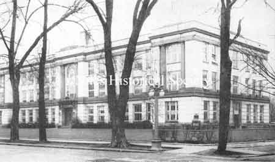
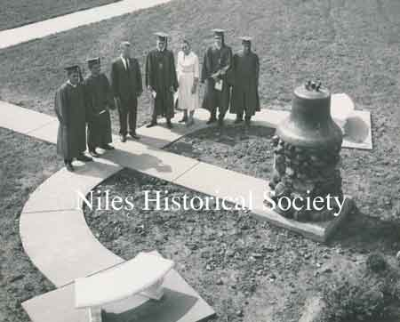
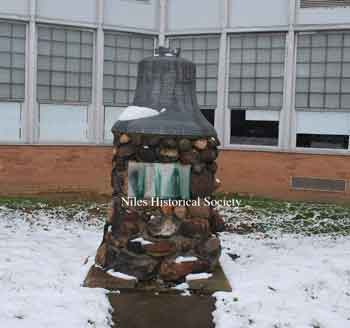
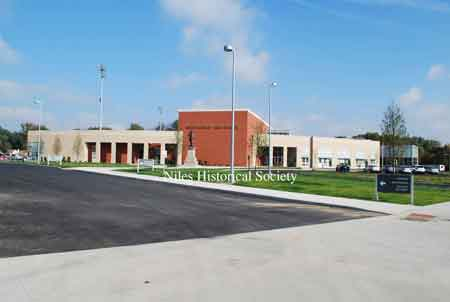
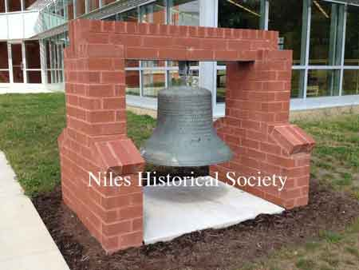
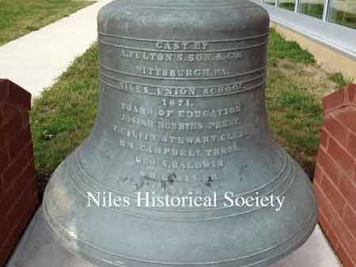

Namee

Central High School

Postcard of the Central Park fountain, wading pool, and band pavillion on the site of the former Central School.
{kind=link}

Graduation photograph of Frank Carl E. Robbins. He was the first to graduate from Niles Central High School in 1875.

This photograph was taken in 1876 of the graduates of Niles Central School. L-R: Elmer Wilson, A.J. Bentley, and Thomas Robbins.
{kind=link}

The Old Central School bell was located on the front lawn of the new McKinley High School on Church Street.
{kind=link}

A second image of the Niles McKinley High School

The Niles McKinley High School opened in the Fall of 1957.
{kind=link}

The 1959 Senior Class Project, under the sponsorship of Miss Anna Compana, had the bell moved from the old McKinley High School to a pedestal in front of the new Niles McKinley High School.
{kind=link}

The Old Central School bell, as it appeared in 2013,
{kind=link}

The new Niles McKinley High School on Dragon Drive was built in 2013.
{kind=link}

The Old Central School bell at the new Niles McKinley High School on Dragon Drive.
{kind=link}
